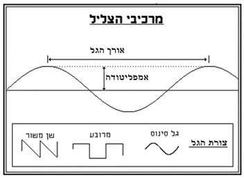
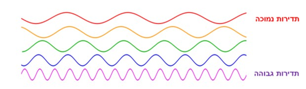

כדי להצליח להקליט טוב את הקול בסרט, על התלמיד להכיר ראשית את המושגים בתורת הקול. עליו לדעת כיצד מתפשט הקול במרחב וכיצד הוא מתורגם בצורה חשמלית להקלטה על כרטיס זיכרון או פס מגנטי.
מטרת תוכנית הלימודים היא ללמד את התלמידים את נושא תורת הקול, כדי שידעו להקליט בצורה הטובה ביותר, באיכות גבוהה ובציוד מתאים. התלמידים ילמדו להשתמש בציוד ההקלטה, יכירו אותו וידעו לתפעל אותו בזמן הצילומים.
הקול במובן החשמלי הוא הפרעה פיזית מחזורית ומתפשטת בחומר, שיכולה להיקלט על ידי איבר או מכשיר שמיעה ולהיתרגם לחוויה חושית שמיעתית. בגלל אופיו המחזורי, הקול הוא סוג של גל, ויכול להתפשט בגז, נוזל, מוצק ופלזמה.
קול הוא ייצוג של צליל, בצורה חשמלית. לכן נגיד פסקול ולא פס-צליל.
צליל הוא מונח שמשתמשים בו כדי לתאר אנרגיה אקוסטית.
הקול מתייחס לאותות חשמליים, להקלטות מגנטיות ולהקלטות דיגיטליות.
הבאת גוף כלשהו לידי תנודות יוצרת צליל. הצליל מתקדם רק כאשר הוא נמצא בתווך כלשהו כמו בסביבת אוויר, מים, עץ, מתכות וכדומה, אך לא בוואקום, בשונה מאור או חום, שמסוגלים לעבור גם בחלל ריק. מהירות ההתקדמות של הקול (מהירות הקול) תלויה בתווך: ככל שהוא יותר דחוס כך גדלה מהירות הקול בו. במים הקול נע מהר יותר מאשר באוויר, בעץ מהר יותר מאשר במים וכן הלאה.
גלי הקול מתפשטים במרחב בצורה מעגלית נפחית ב-360 מעלות על ידי דחיסה והתפשטות של המולקולות המרכיבות את התווך. הקול הוא הייצוג של הצליל בצורה חשמלית. עוצמת הצליל מותנית בגודל התנודות של הגוף המתנדנד ובמרחק בין הגוף למאזין.
יש להבדיל בין עוצמת הקול (אמפליטודה) לגובה הקול (תדירות).
עוצמת הקול נמדדת בדציבלים.
דציבל (DB) הוא יחידה המשמשת למדידת עוצמתם היחסית של קולות.
| רמת דציבל (dB) | דוגמאות |
|---|---|
| 0 | סף השמיעה, ללא קול |
| 10 | נשימה |
| 20 | לחישה |
| 30 | אזור כפרי שקט |
| 45 | שכונה טיפוסית |
| 60 | מכונת תפירה, מכונת כתיבה |
| 70 | תנועה בכביש מהיר, שואב אבק |
| 80 | פינוי פחי אשפה, מדיח, משרד רועש, צלצול טלפון |
| 90 | מקדחה, רחוב סואן, משאית דיזל, בלנדר |
| 95 | רכבת תחתית |
| 100 | מנוע סירה, טרקטור, משאית זבל |
| 115 | פטיש אוויר |
| 130 | מרוץ מכוניות |
| 140 | יריית אקדח (סף כאב) |
| 150 | המראת מטוס |
טווח עוצמת הקול ששומעים בני האדם נע בין 10dB עד סף כאב של 140dB.
טווח התדירויות ששומעים בני האדם נע בין 20 הרץ ל-20,000 הרץ.
מבנה האוזן האנושית על חלקיה השונים:
מיקרופונים ורמקולים הם מכשירים שתפקידם להמיר שינויים בלחץ האקוסטי לאותות חשמליים ולהפך (בהמשך יילמדו בהרחבה סוגי מיקרופונים).
יש להבחין בין סוגי סאונד שונים בקולנוע:
תלמיד יבחר קטע מאחד הסרטים (מסרטי החובה) וינתח אותו לפי המושגים של הקשר בין התמונה לסאונד.